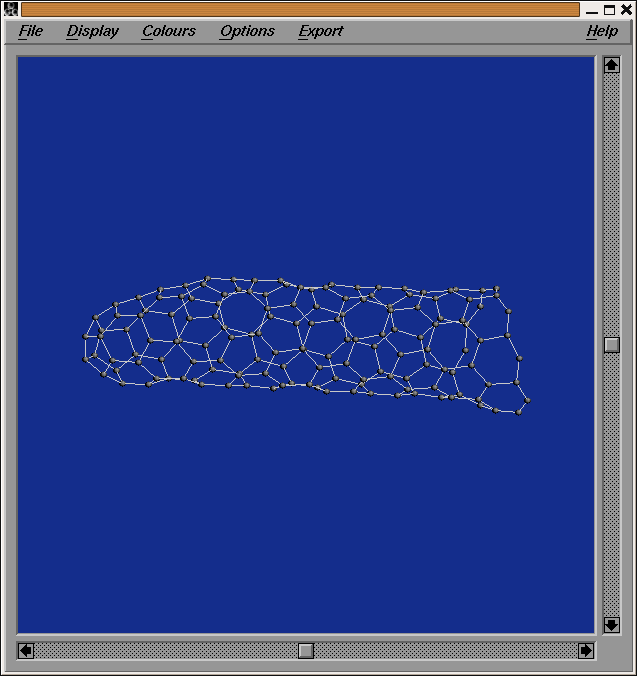
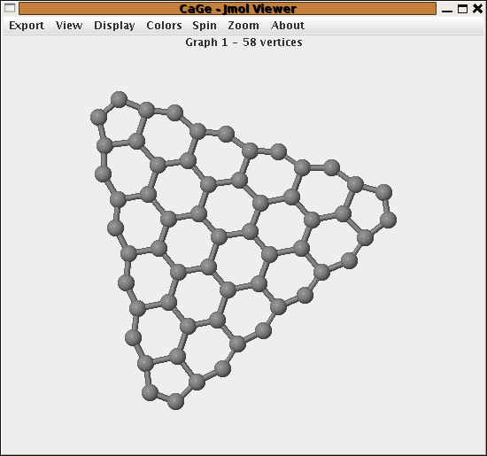

Tubes and cones
The nanotube cap window

The nanocones window
In case of an infinite 3-regular graph with 1 ≤ p ≤ 5 pentagons (and the rest hexagons) the pentagons bend the structure not enough to form a tube -- the structure becaomes a cone.
Similar to nanotubes also nanocones can be classified by a certain boundary structure. If 1 ≤ p ≤ 5 is the number of pentagons and we set s= 6-p then for p ∈ {1,5} one can always find a closed cycle so that the inner part has a boundary structure of ((23)k2)s for some k. For p ∈ {2,3,4} the boundary structure is either ((23)k2)s or ((23)k2)s-1(23)k-12. The patches with all maximal 23-subsequences of the boundary of the same length are called symmetric and the others are called nonsymmetric. Patches with one of these boundary structures and a pentagon in the boundary are called nanocone-caps. If a patch has the given boundary structure but no pentagon in the boundary, then all faces adjacent to the boundary can be removed with the result a patch of the same type (symmetric or unsymmetric) and the same parameter s but the new parameter k' with k'=k-1.
In this part one first chooses whether one wants a symmetric or a nonsymmetric boundary. Then one chooses the number p of pentagons in the cone and the length of the longest side -- which is the parameter k in the description of the boundary above.
The generator generates all caps with the given boundary structure. There is a one-one correspondence between
these caps and nanocones with caps for these parameters, so in fact exactly one representative for every isomorphism
class of nanocones with the given parameters is generated.
Different from nanotubes, different caps can not lead
to the same cone.
Options are:
- generate only caps representing IPR nanocones
- add a given number of hexagon rings to the generated caps

| choosing
a generator window |
||
| the
hydrocarbons windows |
||